전기기능사 (2007-07-15 기출문제)
1과목: 전기 이론
1. 투자율 μ의 단위는?
- AT/m
- Wb/m2
- AT/Wb
- H/m
(정답률: 60%)

2. 반지름 5[㎝] 권수 10회인 원형 코일에 15A의 전류가 흐르면 코일 중심의 자장의 세기는 몇 AT/m 인가?
- 1300
- 1500
- 1700
- 1400
(정답률: 85%)
3. 교류 100V의 최대값은 약 몇 V인가?
- 90
- 100
- 111
- 141
(정답률: 74%)
4. 권수 200회의 코일에5A의 전류가 흘러서 0.025Wb의 자속이 코일을 지난다고 하면, 이 코일의 자체 인덕턴스는 몇 H 인가?
- 2
- 1
- 0.5
- 0.1
(정답률: 55%)
5. 자기회로의 누설계수를 나타낸 식은?
- (누설자속+유효자속) / 전자속
- 누설자속 / 전자속
- 누설자속 / 유효자속
- (누설자속+유효자속) / 유효자속
(정답률: 52%)
6. 세변의 저항 Ra=Rb=Rc=15Ω인 Y결선 회로가 있다. 이것과 등가인 Δ결선 회로의 각 변의 저항은 몇 Ω 인가?
- 5
- 10
- 25
- 45
(정답률: 53%)
7. 1[cal]는 약 몇 [J]인가?
- 0.24
- 0.4186
- 2.4
- 4.186
(정답률: 40%)
8. 저항 R1, R2를 병렬로 접속하면 합성 저항은?
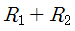
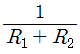
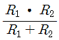
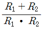
(정답률: 77%)
9. 히스테리시스 곡선이 횡축과 만나는 점은?
- 보자력
- 기자력
- 잔류자기
- 포화자속
(정답률: 77%)
10. 전류가 전압에 비례하고 저항에 반비례한다. 다음 중 어느 것과 가장 관계가 있는가?
- 키르히호프의 제1법칙
- 키르히호프의 제2법칙
- 옴의법칙
- 중첩의 원리
(정답률: 76%)
11. 자체 인덕턴스 20mH의 코일에 20A의 전류를 흘릴 때 저장 에너지는 몇 J인가?
- 2
- 4
- 6
- 8
(정답률: 65%)
12. 10V/m의 전장에 어떤 전하를 놓으면 0.1N의 힘이 작용한다. 전하의 양은 몇 C인가?
- 102
- 10-4
- 10-2
- 104
(정답률: 49%)
13. 저항 4Ω, 유도 리액턴스 8Ω, 용량 리액턴스 5Ω이 직렬로 된 회로에서의 역률은 얼마인가?
- 0.8
- 0.7
- 0.6
- 0.5
(정답률: 47%)
14. 원자핵의 구속력을 벗어나서 물질 내에서 자유로이 이동 할 수 있는 것은?
- 중성자
- 양자
- 분자
- 자유전자
(정답률: 90%)
15. 평행한 두 도체에 같은 방향의 전류가 흘렀을 때 두 도체 사이에 작용하는 힘은 어떻게 되는가?
- 반발력이 작용한다.
- 힘은 0이다.
- 흡인력이 작용한다.
- 1/(2πr)의 힘이 작용한다.
(정답률: 55%)
16. 그림에서 2Ω의 저항에 흐르는 전류는 몇 A인가?
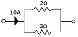
- 3
- 4
- 5
- 6
(정답률: 58%)
17. 기전력 1.5, 내부저항 0.1Ω인 전지 10개를 직렬로 연결하여 2Ω의 저항을 가진 전구에 연결 할 때 전구에 흐르는 전류는 몇 A인가?
- 2
- 3
- 4
- 5
(정답률: 59%)
18. 선간 전압이 380V인 전원에 Z=8+j6 Ω 의 부하를 Y결선으로 접속했을 때 선전류는 약 몇 A인가?
- 12
- 22
- 28
- 38
(정답률: 32%)
19. 비사인파의 일반적인 구성이 아닌 것은?
- 삼각파
- 고조파
- 기본파
- 직류분
(정답률: 74%)
20. 다음 중 전류의 발열 작용에 관한 법칙과 가장 관계가 있는 것은?
- 옴의 법칙
- 페러데이 법칙
- 줄의 법칙
- 키르히호프 법칙
(정답률: 84%)
2과목: 전기 기기
21. 복권 발전기의 병렬 운전을 안전하게 하기 위해서 두 발전기의 전기자와 직권 권선의 접촉점에 연결해야 하는 것은?
- 균압선
- 집전환
- 안정저항
- 브러시
(정답률: 65%)
22. 직류전동기의 규약효율을 표시하는 식은?
- 출력/(출력+손실) × 100%
- 출력/입력 × 100%
- (입력-손실)/입력 × 100%
- 입력/(출력+손실) × 100%
(정답률: 60%)
23. E종 절연물의 최고 허용온도는 몇 ℃인가?
- 40
- 60
- 120
- 125
(정답률: 69%)
24. 200V, 50Hz, 8극, 15KW의 3상 유도전동기에서 전부하 회전수가 720rpm 이면 이 전동기의 2차 효율은 몇 %인가?
- 86
- 96
- 98
- 100
(정답률: 56%)
25. 변압기유의 열화방지와 관계가 가장 먼 것은?
- 브리더
- 컨서베이터
- 불활성 질소
- 부싱
(정답률: 56%)
26. 급정지 하는데 가장 좋은 제동법은?
- 발전제동
- 회생제동
- 단상제동
- 역전제동
(정답률: 75%)
27. 8극 파권 직류발전기의 전기자 권선의 병렬 회로수 a는 얼마로 하고 있는가?
- 1
- 2
- 6
- 8
(정답률: 73%)
28. 3상 동기기에 제동 권선을 설치하는 주된 목적은?
- 출력증가
- 효율증가
- 역률개선
- 난조방지
(정답률: 71%)
29. 동기조상기를 부족여자로 운전하면 어떻게 되는가?
- 콘덴서로 작용
- 뒤진역률 보상
- 리액터로 작용
- 저항손의 보상
(정답률: 69%)
30. 변압기 내부 고장 보호에 쓰이는 계전기로서 가장 적당한 것은?
- 차동계전기
- 접지계전기
- 과전류계전기
- 역상계전기
(정답률: 65%)
31. 3상 동기 발전기에 무부하 전압보다 90도 뒤진 전기자 전류가 흐를 때 전기자 반작용은?
- 감자작용을 한다.
- 증자작용을 한다.
- 교차 자화 작용을 한다.
- 자기 여자 작용을 한다.
(정답률: 68%)
32. 전기자 전압을 전원 전압으로 일정히 유지하고, 계자 전류를 조정하여 자속 Φ[Wb]를 변화시킴으로써 속도를 제어 하는 제어법은?
- 계자제어법
- 전기자전압제어법
- 저항제어법
- 전압제어법
(정답률: 64%)
33. 각각 계자 저항기가 있는 직류분권 전동기와 직류분권 발전기가 있다. 이것을 직렬하여 전동 발전기로 사용하고자 한다. 이것을 기동할 때 계자 저항기의 저항은 각각 어떻게 조정하는 것이 가장 적합한가?
- 전동기 : 최대, 발전기 : 최소
- 전동기 : 중간, 발전기 : 최소
- 전동기 : 최소, 발전기 : 최대
- 전동기 : 최소, 발전기 : 중간
(정답률: 55%)
34. 단상 반파 정류 회로의 전원 전압 200V, 부하저항이 10Ω이면 부하 전류는 약 몇 A인가?
- 4
- 9
- 13
- 18
(정답률: 54%)
35. 변압기에서 전압변동률이 최대가 되는 부하의 역률은? (단, P:퍼센트 저항 강하, q: 퍼센트 리액턴스 강하, cosθm : 역률)
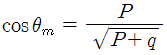
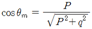
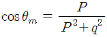
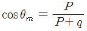
(정답률: 65%)
36. 농형유도 전동기의 기동법이 아닌 것은?
- 기동보상기에 의한 기동법
- 2차 저항기법
- 리액터 기동법
- Y - Δ 기동법
(정답률: 68%)
37. 동기발전기를 병렬 운전하는데 필요한 조건이 아닌 것은?
- 기전력의 파형이 작을 것.
- 기전력의 위상이 같을 것.
- 기전력의 주파수가 같을 것.
- 기전력의 크기가 같을 것.
(정답률: 60%)
38. 인버터의 스위칭 주기가 1[m·sec]이면 주파수는 몇 Hz인가?
- 20
- 60
- 100
- 1000
(정답률: 25%)
39. 제어 정류기의 용도는?
- 교류 - 교류 변환
- 직류 - 교류 변환
- 교류 - 직류 변환
- 직류 - 직류 변환
(정답률: 52%)
40. 단락비가 큰 동기 발전기를 설명하는 것으로 옳지 않은 것은?
- 동기 임피던스가 작다.
- 단락전류가 크다.
- 전기자 반작용이 크다.
- 공극이 크고 전압 변동률이 작다.
(정답률: 52%)
3과목: 전기 설비
41. 고압 가공 전선로의 전선의 조사가 3조일 때 완금의 길이는?
- 1200㎜
- 1400㎜
- 1800㎜
- 2400㎜
(정답률: 64%)
42. 합성수지관 공사에 대한 설명 중 옳지 않은 것은?
- 습기가 많은 장소 또는 물기가 있는 장소에 시설하는 경우에는 방습 장치를 한다.
- 관 상호간 및 박스와는 관을 삽입하는 깊이를 관의 바깥지름의 1.2배 이상으로 한다.
- 관의 지지점간의 거리는 3m이상으로 한다.
- 합성 수지관 안에는 전선에 접속점이 없도록 한다.
(정답률: 64%)
43. 600V 이하의 저압 회로에 사용하는 비닐절연 비닐외장 케이블의 약칭으로 맞는 것은?
- VV
- EV
- FP
- CV
(정답률: 66%)
44. 구리 전선과 전기 기계 기구 단자를 접속하는 경우에 진동 등으로 인하여 헐거워질 염려가 있는 곳에는 어떤 것을 사용하여 접속하여야 하는가?
- 평와셔 2개를 끼운다.
- 스프링 와셔를 끼운다.
- 코드 패스너를 끼운다.
- 정 슬리브를 끼운다.
(정답률: 83%)
45. 다음 중 접지 저항의 측정에 사용되는 측정기의 명칭은?
- 회로시험기
- 변류기
- 검류기
- 어스테스터
(정답률: 68%)
46. 폭발성 분진이 존재하는 곳의 금속관 공사에 있어서 관 상호 및 관과 박스 기타의 부속품이나 풀 박스 또는 전기 기계기구와의 접속은 몇 턱 이상의 나사 조임으로 접속하여야 하는가?
- 2턱
- 3턱
- 4턱
- 5턱
(정답률: 76%)
47. 접지선의 절연 전선 색상은 특별한 경우를 제외하고는 어느 색으로 표시를 하여야 하는가?
- 적색
- 황색
- 녹색
- 흑색
(정답률: 69%)
48. 셀룰로이드, 성냥, 석유류 등 기타 가연성 위험물질을 제조 또는 저장하는 장소의 배선으로 잘못된 배선은?
- 금속관 배선
- 합성수지관 배선
- 플로어덕트 배선
- 케이블 배선
(정답률: 68%)
49. 저압 가공 인입선의 인입구에 사용하는 부속품은?
- 플로어 박스
- 링리듀서
- 엔트런스 캡
- 노말밴드
(정답률: 58%)
50. 수변전 설비에서 차단기의 종류 중 가스 차단기에 들어가는 가스의 종류는?
- CO2
- LPG
- SF6
- LNG
(정답률: 71%)
51. 2종 가요전선관의 굵기(관의호칭)가 아닌 것은?
- 10㎜
- 12㎜
- 16㎜
- 24㎜
(정답률: 28%)
52. 전선 2.6mm 이하의 가는 단선을 직선 접속할 때 어느 방법으로 하여야 하는가?
- 브리타니어 접속
- 트위스트 접속
- 슬리브 접속
- 우산형 접속
(정답률: 66%)
53. 금속 전선관 공사에 필요한 공구가 아닌 것은?
- 파이프 바이스
- 스트리퍼
- 리머
- 오스터
(정답률: 54%)
54. 사용전압이 380V 저압용인 유도전동기 외함은 몇 종 접지 공사를 하여야 하는가?(관련 규정 개정전 문제로 여기서는 기존 정답인 3번을 누르면 정답 처리됩니다. 자세한 내용은 해설을 참고하세요.)
- 제 1종
- 제2종
- 제 3종
- 특별 제 3종
(정답률: 72%)
55. 습기가 많은 장소 또는 물기가 있는 장소의 바닥 위에서 사람이 접촉될 우려가 있는 장소에 시설하는 사용 전압이 400V 미만인 전구선 및 이동전선은 단면적이 최소 몇 mm2 이상인 것을 사용하여야 하는가?
- 0.75
- 1.25
- 2.0
- 3.5
(정답률: 46%)
56. 다음 중 변류기의 약호는?
- CB
- CT
- DS
- COS
(정답률: 58%)
57. 저압 옥내간선에서 전동기의 정격전류가 40A 일 때 전선의 허용 전류는 몇 A 인가?
- 44
- 50
- 60
- 100
(정답률: 46%)
58. 배선용 차단기의 심벌은?
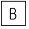
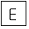
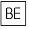
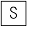
(정답률: 69%)
59. 다음 중 금속덕트 공사 방법과 거리가 가장 먼 것은?
- 덕트의 말단은 열어 놓을 것
- 금속덕트는 3m 이하의 간격으로 견고하게 지지할 것
- 금속덕트의 뚜껑은 쉽게 열리지 않도록 시설할 것
- 금속덕트 상호는 견고하고 또한 전기적으로 완전하게 접속할 것
(정답률: 71%)
60. 합성수지 몰드 배선의 사용전압은 몇 V 미만 이어야 하는가?
- 400
- 600
- 750
- 800
(정답률: 71%)